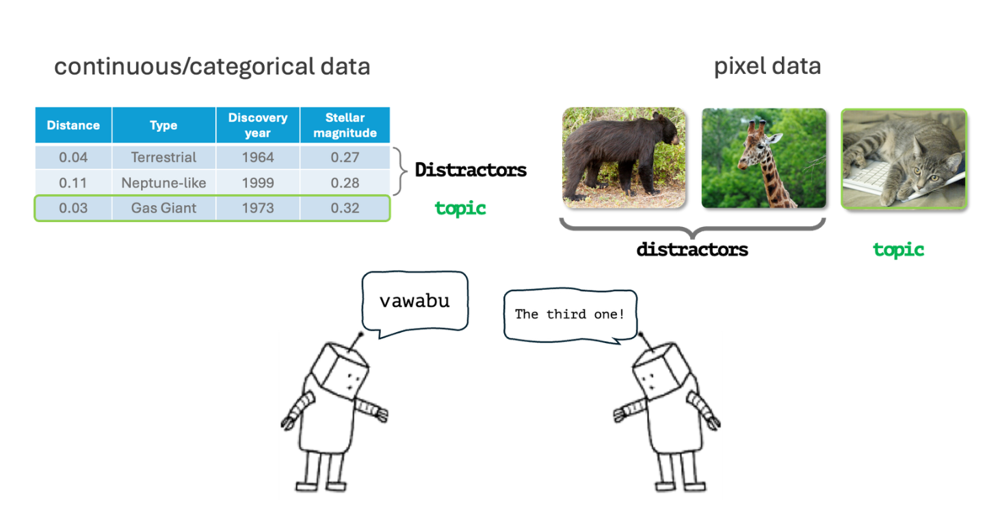
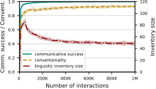
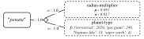

The electromagnetic spectrum spans radio waves, microwaves, infrared, visible light, ultraviolet, X-rays, and gamma rays. Human vision detects only a small portion of this spectrum, known as visible light.
Schematic; bands are not shown to scale.
Within visible light, humans perceive and categorise a continuous range of wavelengths into color categories such as red. The physical spectrum itself contains no sharp boundaries corresponding to these categories. Instead, color categories arise from the structure of the human visual system and are further shaped by learning, communicative needs and culture. Language provides conventional names for these perceptually grounded categories.
Artificial agents, from self-driving cars to household robots, may use sensors with no human counterpart, including lidar, sonar, remote temperature sensing and infrared cameras. The distinctions that are useful to them need not match those encoded in human language. Instead, useful categories can emerge from the agents' own perceptual capabilities and the tasks they need to solve.
Even two robots observing the same object may represent it differently. One may measure position, while another measures size. Even when both use the same sensor (e.g., infrared), differences in calibration can produce different readings. Their internal feature vectors may therefore differ both in dimensionality and in value. Directly aligning raw measurements across a growing population would require extensive calibration and coordination.
A grounded language offers another possibility: agents can communicate through linguistic abstractions without requiring their underlying representations to be identical. This paper studies how a population of agents can bootstrap such a language through interaction.
0.680.420.420.610.650.450.35The method takes a constructivist perspective: agents build from the ground-up form-meaning pairings through interaction. Rather than learning an existing language, they bootstrap a new one. Their linguistic inventories start empty and grow as needed. Agents learn representations for both producing and understanding utterances.

Agents form a population and interact locally in pairs. In the reference game shown here, either agent can act as speaker or listener. The speaker selects or invents a word to distinguish a topic from distractors, and the listener uses it to identify the intended topic. Feedback allows both agents to adjust their representations. Over repeated interactions, words are refined and succesful ones spread through the population. In this way, the emerging language becomes grounded in the agents' own experience and adapted to their world and task.
As agents interact over time, we can track how local interactions give rise to a population-level linguistic convention. The x-axis shows the number of interactions. The curves capture three aspects of this process:

Each agent independently maintains and updates its own concepts and linguistic inventory. Agents have no access to one another's internal representations. Despite this, as agents interact over time, initially different representations associated with the same word become increasingly aligned across agents, while competing words progressively differentiate in meaning and form distinct niches in conceptual space.
The result is a population-level linguistic convention in which words acquire grounded meanings that support successful reference.
The method operates over perceptual representations of arbitrary dimensionality. We evaluate the method across 37 environments spanning continuous, categorical and mixed feature spaces, including large-scale image datasets such as MS COCO and CelebA.
Consider an example from the exoplanets setting in which agents developed the word penatu (note: in this work the form itself carries no meaning). Through use, it becomes associated with a concept that combines a continuous feature (radius-multiplier) with a categorical one (planet type).

Explore our interactive visualisation of the core algorithms underlying the methodology.
@article{botokoekila-etal-2026-emergent,
author = {Botoko Ekila, Jérôme and Verheyen, Lara and Nevens, Jens and Beuls, Katrien and Van Eecke, Paul},
title = {Emergent Communication in Continuous Worlds: Self-Organisation of Conceptually Grounded Vocabularies at Scale},
journal = {Transactions of the Association for Computational Linguistics},
volume = {14},
pages = {2234--2257},
year = {2026},
doi = {10.1162/TACL.a.799}
}